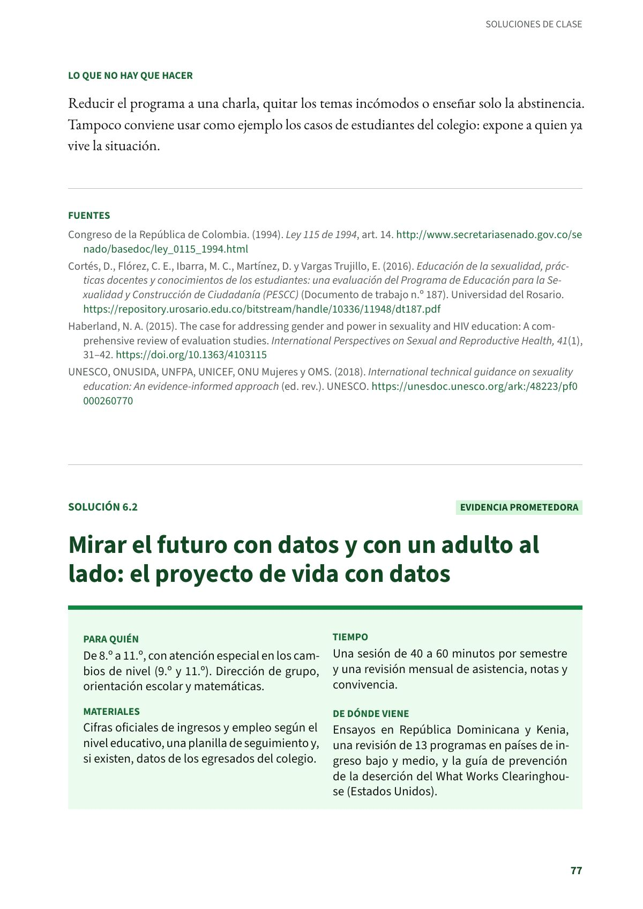
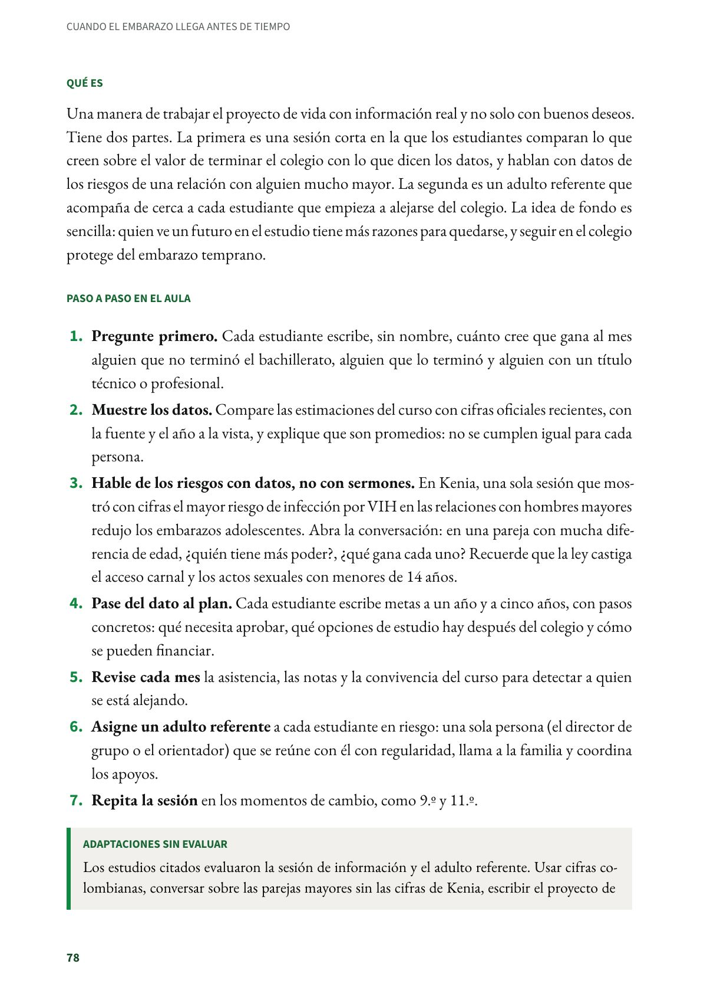
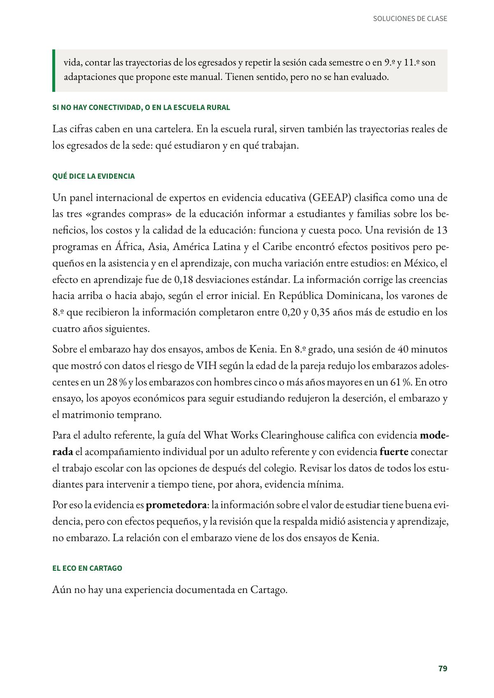
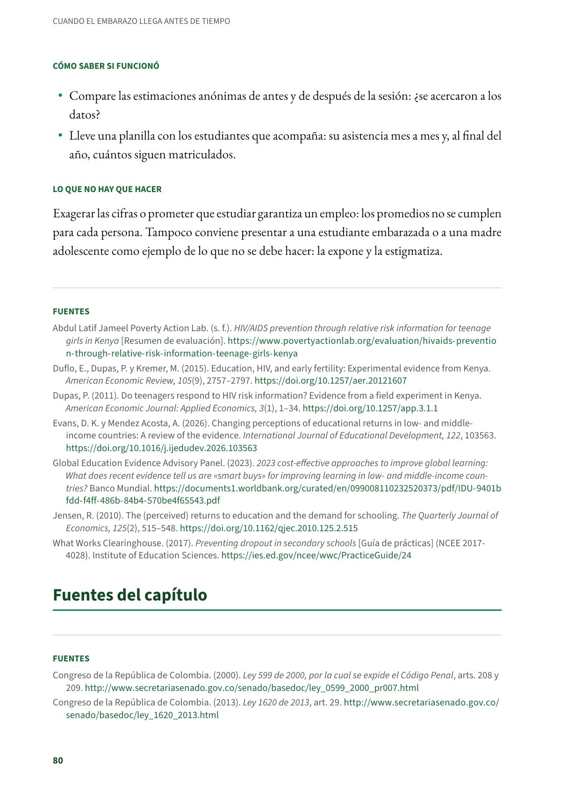

Mirar el futuro con datos y con un adulto al lado: el proyecto de vida con datos
Una manera de trabajar el proyecto de vida con información real y no solo con buenos deseos. De 8.º a 11.º, con atención especial en los cambios de nivel (9.º y 11.º). Evidencia prometedora.
PDF · 4 págs. · 88 KBEn resumen
- Evidencia: prometedora.
- Para quién: De 8.º a 11.º, con atención especial en los cambios de nivel (9.º y 11.º). Dirección de grupo, orientación escolar y matemáticas.
- Tiempo: Una sesión de 40 a 60 minutos por semestre y una revisión mensual de asistencia, notas y convivencia.
- Materiales: Cifras oficiales de ingresos y empleo según el nivel educativo, una planilla de seguimiento y, si existen, datos de los egresados del colegio.
- De dónde viene: Ensayos en República Dominicana y Kenia, una revisión de 13 programas en países de ingreso bajo y medio, y la guía de prevención de la deserción del What Works Clearinghouse (Estados Unidos).
Qué es
Una manera de trabajar el proyecto de vida con información real y no solo con buenos deseos. Tiene dos partes. La primera es una sesión corta en la que los estudiantes comparan lo que creen sobre el valor de terminar el colegio con lo que dicen los datos, y hablan con datos de los riesgos de una relación con alguien mucho mayor. La segunda es un adulto referente que acompaña de cerca a cada estudiante que empieza a alejarse del colegio. La idea de fondo es sencilla: quien ve un futuro en el estudio tiene más razones para quedarse, y seguir en el colegio protege del embarazo temprano.
Paso a paso en el aula
- Pregunte primero. Cada estudiante escribe, sin nombre, cuánto cree que gana al mes alguien que no terminó el bachillerato, alguien que lo terminó y alguien con un título técnico o profesional.
- Muestre los datos. Compare las estimaciones del curso con cifras oficiales recientes, con la fuente y el año a la vista, y explique que son promedios: no se cumplen igual para cada persona.
- Hable de los riesgos con datos, no con sermones. En Kenia, una sola sesión que mostró con cifras el mayor riesgo de infección por VIH en las relaciones con hombres mayores redujo los embarazos adolescentes. Abra la conversación: en una pareja con mucha diferencia de edad, ¿quién tiene más poder?, ¿qué gana cada uno? Recuerde que la ley castiga el acceso carnal y los actos sexuales con menores de 14 años.
- Pase del dato al plan. Cada estudiante escribe metas a un año y a cinco años, con pasos concretos: qué necesita aprobar, qué opciones de estudio hay después del colegio y cómo se pueden financiar.
- Revise cada mes la asistencia, las notas y la convivencia del curso para detectar a quien se está alejando.
- Asigne un adulto referente a cada estudiante en riesgo: una sola persona (el director de grupo o el orientador) que se reúne con él con regularidad, llama a la familia y coordina los apoyos.
- Repita la sesión en los momentos de cambio, como 9.º y 11.º.
Adaptaciones sin evaluar
Los estudios citados evaluaron la sesión de información y el adulto referente. Usar cifras colombianas, conversar sobre las parejas mayores sin las cifras de Kenia, escribir el proyecto de vida, contar las trayectorias de los egresados y repetir la sesión cada semestre o en 9.º y 11.º son adaptaciones que propone este manual. Tienen sentido, pero no se han evaluado.
Si no hay conectividad, o en la escuela rural
Las cifras caben en una cartelera. En la escuela rural, sirven también las trayectorias reales de los egresados de la sede: qué estudiaron y en qué trabajan.
Qué dice la evidencia
Un panel internacional de expertos en evidencia educativa (GEEAP) clasifica como una de las tres «grandes compras» de la educación informar a estudiantes y familias sobre los beneficios, los costos y la calidad de la educación: funciona y cuesta poco. Una revisión de 13 programas en África, Asia, América Latina y el Caribe encontró efectos positivos pero pequeños en la asistencia y en el aprendizaje, con mucha variación entre estudios: en México, el efecto en aprendizaje fue de 0,18 desviaciones estándar. La información corrige las creencias hacia arriba o hacia abajo, según el error inicial. En República Dominicana, los varones de 8.º que recibieron la información completaron entre 0,20 y 0,35 años más de estudio en los cuatro años siguientes.
Sobre el embarazo hay dos ensayos, ambos de Kenia. En 8.º grado, una sesión de 40 minutos que mostró con datos el riesgo de VIH según la edad de la pareja redujo los embarazos adolescentes en un 28 % y los embarazos con hombres cinco o más años mayores en un 61 %. En otro ensayo, los apoyos económicos para seguir estudiando redujeron la deserción, el embarazo y el matrimonio temprano.
Para el adulto referente, la guía del What Works Clearinghouse califica con evidencia moderada el acompañamiento individual por un adulto referente y con evidencia fuerte conectar el trabajo escolar con las opciones de después del colegio. Revisar los datos de todos los estudiantes para intervenir a tiempo tiene, por ahora, evidencia mínima.
Por eso la evidencia es prometedora: la información sobre el valor de estudiar tiene buena evidencia, pero con efectos pequeños, y la revisión que la respalda midió asistencia y aprendizaje, no embarazo. La relación con el embarazo viene de los dos ensayos de Kenia.
El eco en Cartago
Aún no hay una experiencia documentada en Cartago.
Cómo saber si funcionó
- Compare las estimaciones anónimas de antes y de después de la sesión: ¿se acercaron a los datos?
- Lleve una planilla con los estudiantes que acompaña: su asistencia mes a mes y, al final del año, cuántos siguen matriculados.
Lo que no hay que hacer
Exagerar las cifras o prometer que estudiar garantiza un empleo: los promedios no se cumplen para cada persona. Tampoco conviene presentar a una estudiante embarazada o a una madre adolescente como ejemplo de lo que no se debe hacer: la expone y la estigmatiza.
Fuentes
Abdul Latif Jameel Poverty Action Lab. (s. f.). HIV/AIDS prevention through relative risk information for teenage girls in Kenya [Resumen de evaluación]. povertyactionlab.org
Duflo, E., Dupas, P. y Kremer, M. (2015). Education, HIV, and early fertility: Experimental evidence from Kenya. American Economic Review, 105(9), 2757–2797. doi.org
Dupas, P. (2011). Do teenagers respond to HIV risk information? Evidence from a field experiment in Kenya. American Economic Journal: Applied Economics, 3(1), 1–34. doi.org
Evans, D. K. y Mendez Acosta, A. (2026). Changing perceptions of educational returns in low- and middle-income countries: A review of the evidence. International Journal of Educational Development, 122, 103563. doi.org
Global Education Evidence Advisory Panel. (2023). 2023 cost-effective approaches to improve global learning: What does recent evidence tell us are «smart buys» for improving learning in low- and middle-income countries? Banco Mundial. documents1.worldbank.org
Jensen, R. (2010). The (perceived) returns to education and the demand for schooling. The Quarterly Journal of Economics, 125(2), 515–548. doi.org
What Works Clearinghouse. (2017). Preventing dropout in secondary schools [Guía de prácticas] (NCEE 2017-4028). Institute of Education Sciences. ies.ed.gov
Así se ve en el libro
4 páginas


